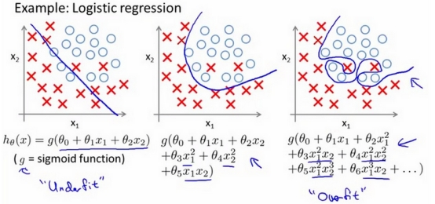

逻辑回归原理¶
广告点击率 是否为垃圾邮件 是否患病 金融诈骗 虚假账号
1. 逻辑回归推导¶
1.1 似然函数¶
逻辑斯特回归似然函数定义为：
注意：这里数据集中的每个样本都是相互独立的
注意：
1.2 极大似然估计参数估计¶
接下来的目标变为了：找参数 的极大似然估计
的极大似然估计
（1）目标函数加log处理

如上述案例，我们呢就带入上面那个例子来计算一遍，就能理解意义了。

我们已经知道，-log(P), P值越大，结果越小，所以我们可以对着这个损失的式子去分析。
（2）目标函数求导，并利用梯度上升算法求解参数
（3）梯度上升算法求解参数

请一定要注意，求解似然函数一般是求解最大值，使用梯度上升算法，使得最优解不断增大。相对应的是损失函数，一般是似然函数的相反数，所以使用的是梯度下降法求解损失函数的最小值参数。
通过推导我们发现逻辑斯特回归的代价函数与线性回归形式上很像，不同之处在于模型假设不一样，线性回归是 ， 而逻辑回归在此基础上多了一层映射
， 而逻辑回归在此基础上多了一层映射 。
。
上述的似然函数，我们可以在目标函数中加一个负号变为损失函数或代价函数，从而原来的梯度上升的算法就变为了梯度下降算法求解参数的值。
1.3 通过正则化解决拟合问题¶

过拟合的问题是机器学习中常见的问题，它是指模型在训练数据上表现良好，但是用于未知数据（测试数据）时性能不佳。如果一个模型出现了过拟合的问题，我们也说这个模型有高方差，这就有可能是因为使用了相关数据中过多的参数，从而使得模型变得复杂。同样，模型也可能出现欠拟合，这意味着模型过于简单，无法发现训练数据集中的隐含的模式，这也会使得模型应用于未知数据的时候表现不佳。
偏差-方差权衡bias和variance就是通过正则化调整模型的复杂度，我们通过正则化解决共线性（特征高度相似的）一个很用的办法。它可以过滤掉数据中的噪声。具体的做法就是引入额外的信息或偏差对极端的参数权重做出惩罚。
最常用的是L2正则化，有时也称为L2收缩或衰减，写作如下公式：
 ，
， 为正则化系数
为正则化系数
在逻辑斯特函数中，只需要在最大似然函数中加入正则化项，以降低系数带来的副作用：

通过正则化系数 ，保持权值较小的时候，我们就可以控制模型与训练数据的拟合程度，加入
，保持权值较小的时候，我们就可以控制模型与训练数据的拟合程度，加入 值，可以增强正则化的强度。
值，可以增强正则化的强度。
2. LogisticRegression 介绍¶
sklearn.linear_model.LogisticRegression(solver='liblinear', penalty=‘l2’, C = 1.0)
1. solver 损失函数优化方法:
1. 训练速度：liblinear 对小数据集场景训练速度更快，sag 和 saga 对大数据集更快一些。
2. 正则化：
1. newton-cg、lbfgs、sag、saga 支持 L2 正则化或者没有正则化
2. liblinear 和 saga 同样支持 L1 正则化
3. saga 支持 elasticnet 正则化项，通过 l1_ratio 设置 r 值
4. liblinear 必须设置正则化项
3. 多分类
1. 只有 newton-cg、sag、saga、lbfgs 能够处理多分类
2. liblinear 只能 one-vs-rest 处理多分类
2. penalty：正则化的种类，l1 或者 l2。
3. C：正则化力度
3.Python原生实现LR¶
- Python代码实现LR分类算法：
import numpy as np
import random
# m denotes the number of examples here, not the number of features
def gradientDescent(x, y, theta, alpha, m, numIterations):
xTrans = x.transpose()
for i in range(0, numIterations):
hypothesis = np.dot(x, theta)
loss = hypothesis - y
# avg cost per example (the 2 in 2*m doesn't really matter here.
# But to be consistent with the gradient, I include it)
cost = np.sum(loss ** 2) / (2 * m)
print("Iteration %d | Cost: %f" % (i, cost))
# avg gradient per example
gradient = np.dot(xTrans, loss) / m
# update
theta = theta - alpha * gradient
return theta
def genData(numPoints, bias, variance):
x = np.zeros(shape=(numPoints, 2))
y = np.zeros(shape=numPoints)
# basically a straight line
for i in range(0, numPoints):
# bias feature
x[i][0] = 1
x[i][1] = i
# our target variable
y[i] = (i + bias) + random.uniform(0, 1) * variance
return x, y
# gen 100 points with a bias of 25 and 10 variance as a bit of noise
x, y = genData(100, 25, 10)
m, n = np.shape(x)
numIterations= 100000
alpha = 0.0005
theta = np.ones(n)
theta = gradientDescent(x, y, theta, alpha, m, numIterations)
print(theta)